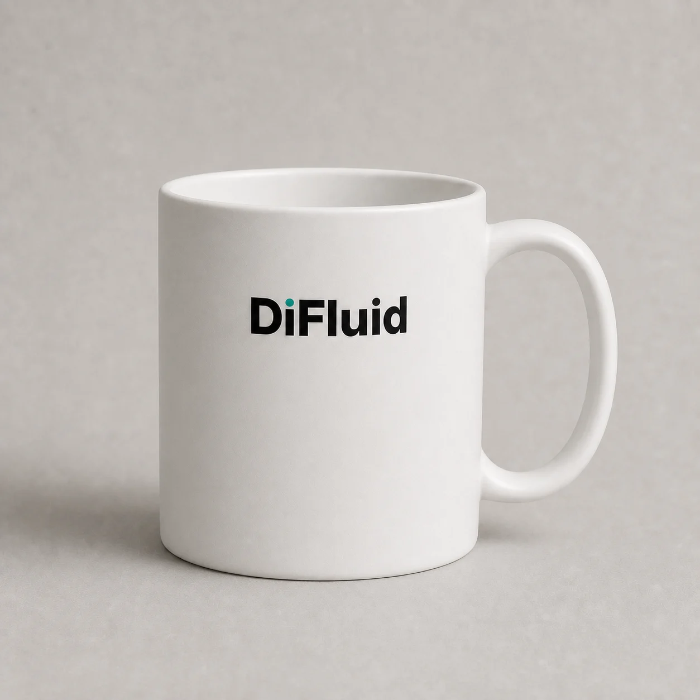
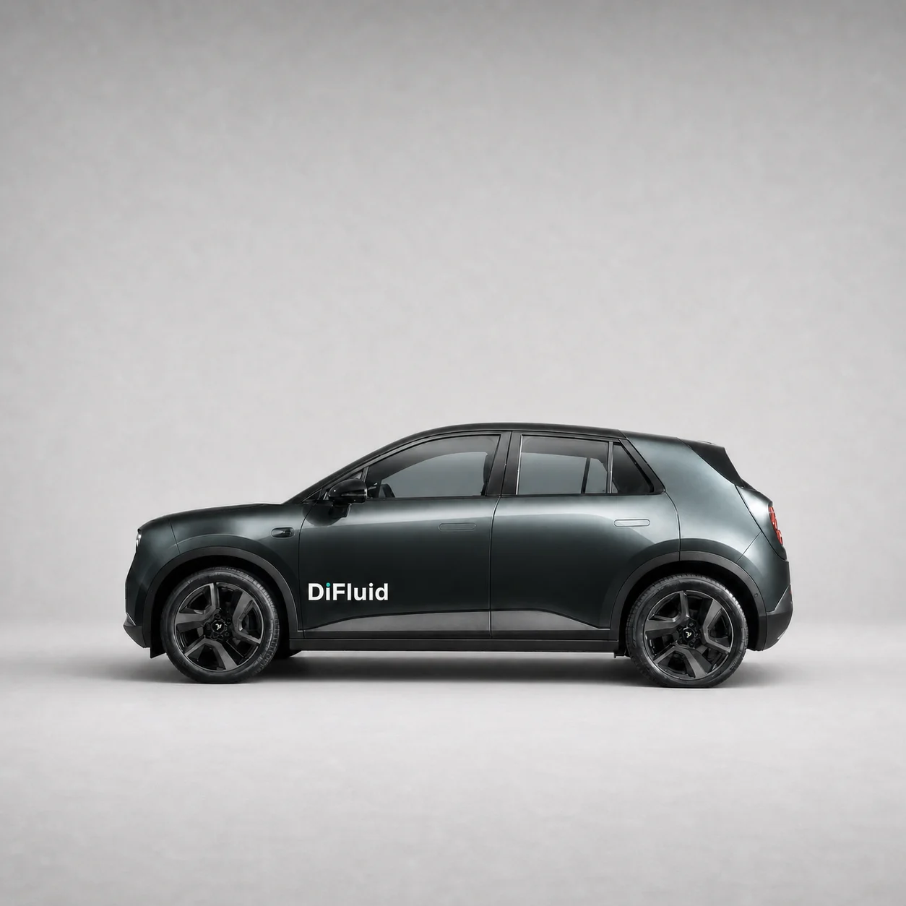

Respect the surface.尊重材质。
Review contrast on the actual finish. Curvature, reflection, and texture change the way a mark is read.
在实际表面检验对比。曲率、反光与纹理，都会影响标志的识读。
04 / BRAND IN THE WORLD 品牌应用
From a coffee ritual to a shared space. A coherent identity stays recognizable as the surface changes.
从一杯咖啡的日常，到共同体验的空间。载体可以变化，识别保持连贯。
01 / EVERYDAY PRESENCE

A familiar object makes the brand part of the daily coffee ritual. Let the mark remain legible without overwhelming the object.
以熟悉的物件融入每日咖啡仪式。标志保持清晰，为器物本身留下空间。
Existing brand application concept visuals. They illustrate identity placement; they are not product availability or manufacturing specifications.
现有品牌应用概念视觉，用于讨论品牌落位，不代表产品在售或制造规格。
02 / A WAY TO CHOOSE
Review contrast on the actual finish. Curvature, reflection, and texture change the way a mark is read.
在实际表面检验对比。曲率、反光与纹理，都会影响标志的识读。
Judge size at the distance people really use the object. Keep the form and its function in the foreground.
以真实使用距离判断尺寸，让器物的形态与功能保持主导。
Confirm placement with a physical sample before approving a production process or a durability claim.
通过实物打样确认落位，再确定制作工艺与耐用性要求。
03 / BEYOND THE DESK

A change in scale asks for a change in composition. The wordmark, the imagery, and the surrounding space still need a clear relationship.
尺度的变化，需要构图的调整。字标、图像与周围空间，仍需保持清晰关系。
04 / THE NEXT TOUCHPOINTS
Directions for future development. Packaging, digital experiences, and exhibition systems still need their own detailed briefs and validation.
面向后续发展的方向提案。包装、数字体验与展陈系统，仍需独立的设计任务与验证。
Introduce the product's role, guide the first useful action, and give technical information a readable home.
说明产品的作用，引导第一次有效行动，让技术信息各得其所。
Bring observation, interpretation, and action together. Use color to explain the state, and language to explain its meaning.
连接观察、解释与行动。颜色表达状态，语言解释含义。
Let a real coffee experience lead the encounter. Connect what people taste with what the tools help them observe.
从真实的咖啡体验出发，把人的品尝与工具带来的观察连接起来。
AN APPLICATION PRINCIPLE